Adapter network
A modular conditioning pathway encodes edge and depth maps and injects the resulting structural signal into a DiT-based text-to-video backbone without requiring architectural changes to the base model.
A modular adapter network that augments DiT-based text-to-video models with edge and depth structural conditioning — with adjustable strength, flexible modality control, and support for dense, sparse, and single-frame temporal guidance under one checkpoint.
Diffusion-based text-to-video models give creators a powerful interface for generating videos from text prompts, but they provide limited control over the geometry, layout, and motion of the generated clip. A creator may want the output to follow the structure of a mockup, a hand-drawn sketch, a reference video, or a 3D depth pass, while still using text to control the visual appearance. Standard text-only generation does not provide a direct way to express this structural intent.
This project introduces a modular adapter-based conditioning network that augments a DiT-based text-to-video backbone with structural guidance. In this proof of concept, the structure is represented using per-frame edge and depth maps extracted from a reference clip. The adapter supports any subset of conditioning modalities at inference time, including no conditioning, which recovers the original text-to-video setting. It also handles dense, sparse, and single-frame temporal conditioning using a single trained checkpoint.
A useful property of the design is that each conditioning modality can be controlled continuously at sample time. Edge and depth can therefore act as anything from a weak structural hint to a strong reference constraint. We validate the approach over Adobe's internal production text-to-video model using 20-frame clips at a fixed spatial resolution.
The core idea is to add a lightweight structural-control pathway around the base video model, instead of redesigning the text-to-video backbone itself.
We design the conditioning network as a modular adapter that augments a DiT-based text-to-video backbone. Per-frame edge and depth maps are extracted from a reference clip, encoded into auxiliary streams, and injected into the denoising process through the adapter. The base model remains the text-to-video generator, while the adapter provides an additional pathway for structural control.
Two inputs determine how the conditioning is applied. The first is a per-modality strength scalar, one for edge and one for depth, which controls how strongly each structural stream influences generation. The second is a temporal mask that specifies which video frames contain conditioning signal. During training, both are sampled stochastically: strength values are sampled from a continuous range, and temporal masks are sampled across dense, sparse, and single-frame regimes.
This training strategy makes the checkpoint flexible at inference time. The same model can be used with edge only, depth only, both modalities, or no structure at all. It can also be used with conditioning on every frame, a few anchor frames, or a single anchor frame, without training separate models for each setting.
A modular conditioning pathway encodes edge and depth maps and injects the resulting structural signal into a DiT-based text-to-video backbone without requiring architectural changes to the base model.
Per-modality strength values are sampled during training and exposed at inference, allowing edge and depth influence to be adjusted independently.
Stochastic temporal masking allows one checkpoint to support dense, sparse, and single-frame conditioning rather than relying on regime-specific models.
The project adds a structural-control pathway to text-to-video generation while preserving the flexibility of prompt-driven synthesis.
The results below show qualitative samples organized by temporal regime. Each example presents the structural inputs followed by independent samples generated from the same prompt and conditioning signal.
Qualitative samples are grouped by the amount of temporal structure available to the model: all frames, sparse anchor frames, or a single anchor frame.
Edge and depth signals are provided for all 20 frames. The generated motion follows the reference structure closely, while the text prompt controls appearance and scene semantics.
beautiful scene, with icy-mountains afar. There is a frozen lake in the scene with penguins walking on it
A beautiful scene of sand dunes in a desert
a cow grazing and moving in the field. Mountains in the background
Conditioning is provided at four anchor frames, here t = 0, 5, 10, and 15. The remaining frames are generated by the model under the joint constraint of the text prompt and the sparse structural anchors.
A red car on the road on a bright sunny day
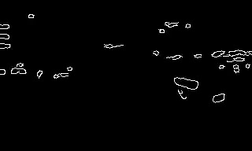
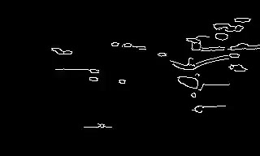
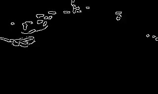
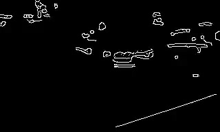
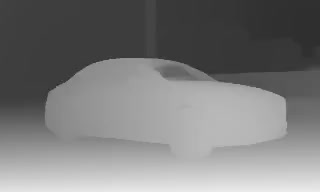
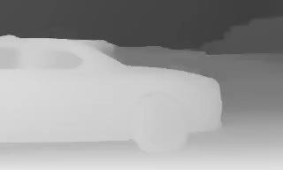
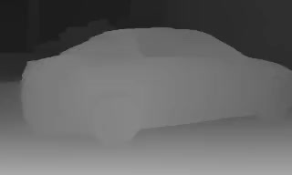
A pole with a poster of a lost cat on it. Trees in background with leaves moving erratically due to wind
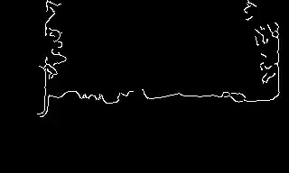
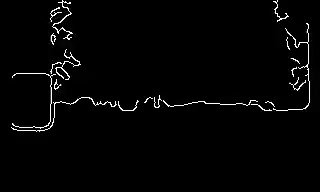
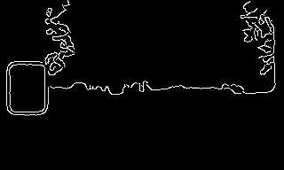
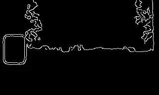
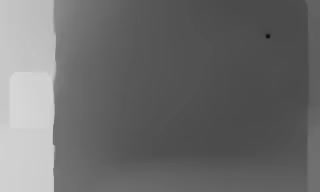
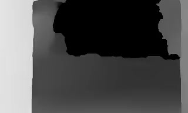
a person on a skateboard, upper body shot
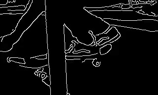
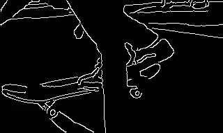
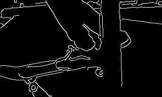
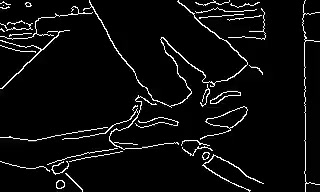
Conditioning is provided only at t = 0. The rest of the video is generated from the text prompt and the structure of a single anchor frame.
A statue of a woman in a museum
a rabbit behind fence is sitting and chewing
A man slicing tomatoes with a knife
I thank Gunjan Aggarwal and Lakshya for their technical guidance throughout this project, and Kshitij Garg for hosting the work on his team. I am also grateful to the broader Adobe Firefly Video team for the model, infrastructure, and engineering support on which this work was built.